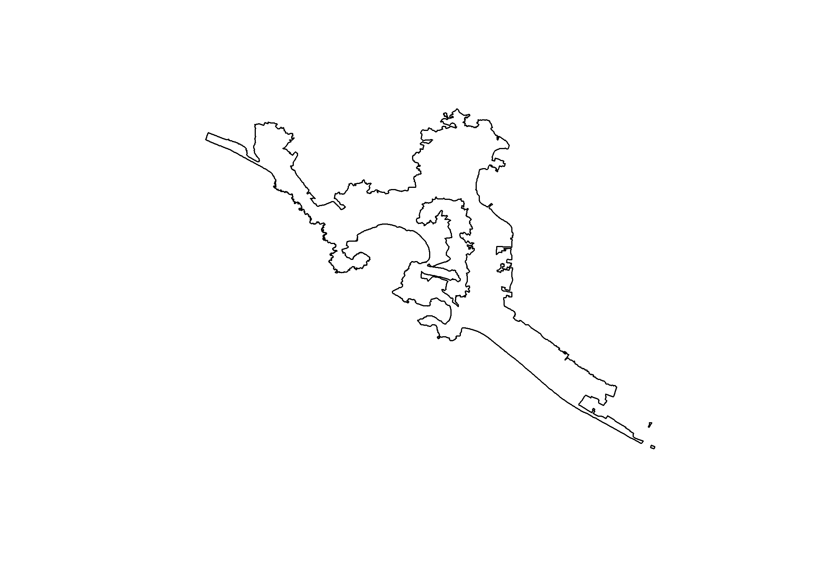
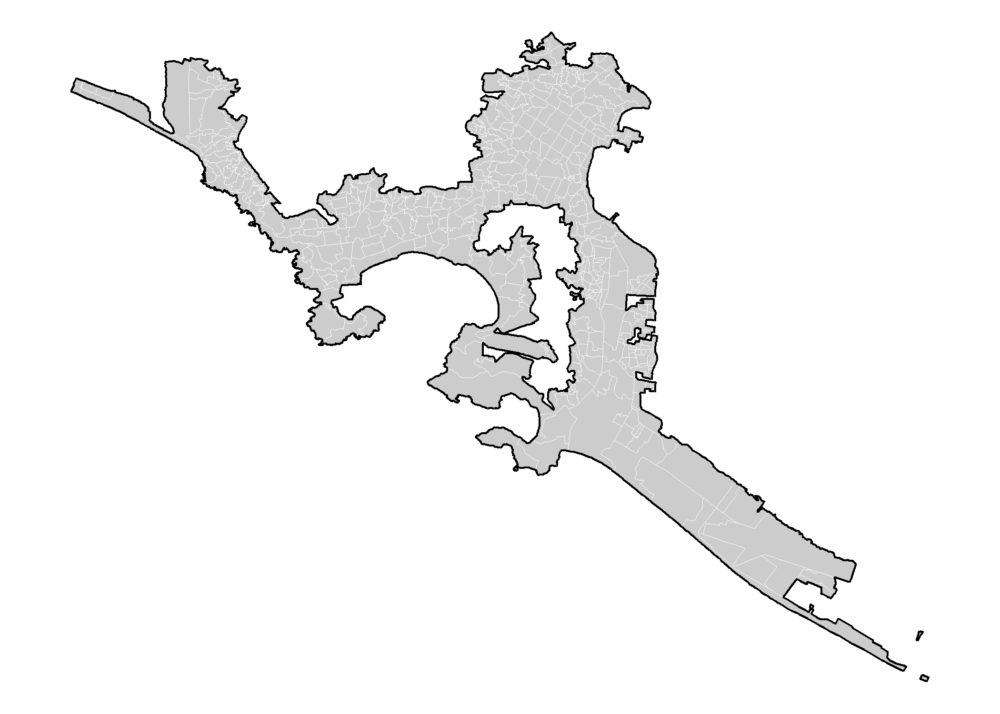
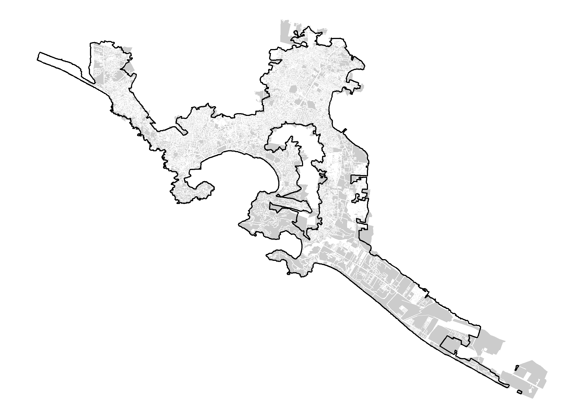

rgeomex is a package developed in the department of prevention and control of diseases transmitted by vector of the Secretary of Health of Veracruz with collaboration of the CENAPRECE and INDRE
overview
rgeomex is a package to provide spatial dataset (areal data) available and published homepage of INE and INEGI. These spatial dataset are useful for visualization and spatial analysis of diseases. The secondary objective of the package is to provide spatial bases for the calculation of dengue hotspots and their vectors. The package has six spatial datasets.
-
blocks_ine20_mxspatial dataset containing polygon data of blocks from Mexico (INE 2020). -
localities_inegi19_mxspatial dataset containing polygon data of localities from Mexico (INEGI 2019). -
AGEB_inegi19_mxspatial dataset containing polygon data of AGEBs from Mexico (INEGI 2019). -
AGEE_inegi19_mxspatial dataset containing polygon data of AGEE from Mexico (INEGI 2019). -
AGEM_inegi19_mxspatial dataset containing polygon data of AGEM from Mexico (INEGI 2019).
Installation
You can install the released version of rgeomex from CRAN with:
install.packages("rgeomex")And the development version from GitHub with:
# install.packages("devtools")
devtools::install_github("fdzul/rgeomex")Example
This is a basic example which shows how to solve a common problem:
library(magrittr)
library(sf)
#> Warning: package 'sf' was built under R version 4.1.3
#> Linking to GEOS 3.9.1, GDAL 3.2.1, PROJ 7.2.1; sf_use_s2() is TRUE
loc_acapulco <- rgeomex::loc_inegi19_mx %>%
sf::st_make_valid() |>
dplyr::filter(NOMGEO %in% c(similiars::find_most_similar_string("Acapulco de Juarez", unique(NOMGEO))) &
AMBITO %in% c("Urbana"))
plot(sf::st_geometry(loc_acapulco))
y <- rgeomex::AGEB_inegi_2019_a |>
sf::st_make_valid()
ageb_acapulco <- y[loc_acapulco,]
head(ageb_acapulco)
#> Simple feature collection with 6 features and 9 fields
#> Geometry type: MULTIPOLYGON
#> Dimension: XY
#> Bounding box: xmin: -99.95915 ymin: 16.81636 xmax: -99.84201 ymax: 16.89684
#> Geodetic CRS: WGS 84
#> OBJECTID CVEGEO CVE_ENT CVE_MUN CVE_LOC CVE_AGEB Ambito Shape_Leng
#> 18715 18715 1200100010405 12 001 0001 0405 Urbana 5259.950
#> 18716 18716 1200100012187 12 001 0001 2187 Urbana 3042.943
#> 18717 18717 1200100010496 12 001 0001 0496 Urbana 5651.284
#> 18718 18718 1200100010513 12 001 0001 0513 Urbana 9803.373
#> 18719 18719 1200100010528 12 001 0001 0528 Urbana 8486.585
#> 18720 18720 1200100012242 12 001 0001 2242 Urbana 2769.117
#> Shape_Area geometry
#> 18715 1039839.0 MULTIPOLYGON (((-99.86266 1...
#> 18716 200872.4 MULTIPOLYGON (((-99.95219 1...
#> 18717 1199501.4 MULTIPOLYGON (((-99.91208 1...
#> 18718 1447090.3 MULTIPOLYGON (((-99.84382 1...
#> 18719 1549657.9 MULTIPOLYGON (((-99.85683 1...
#> 18720 215333.1 MULTIPOLYGON (((-99.95224 1...
ggplot2::ggplot()+
ggplot2::geom_sf(data = ageb_acapulco,
fill = "gray80",
col = "white",
lwd = 0.1) +
ggplot2::theme_void() +
ggplot2::geom_sf(data = loc_acapulco,
fill = NA,
col = "black",
lwd = .5)
blocks_acapulco <- rbind(rgeomex::blocks_ine20_mx_a,
rgeomex::blocks_ine20_mx_b) |>
sf::st_make_valid()
blocks_acapulco <- blocks_acapulco[loc_acapulco,]
head(blocks_acapulco)
#> Simple feature collection with 6 features and 8 fields
#> Geometry type: MULTIPOLYGON
#> Dimension: XY
#> Bounding box: xmin: -99.95625 ymin: 16.8926 xmax: -99.95195 ymax: 16.89642
#> Geodetic CRS: WGS 84
#> gid id entidad distrito municipio seccion localidad manzana
#> 479902 46791 5 12 4 1 1 1 63
#> 479903 46826 59 12 4 1 2 1 69
#> 479904 46792 9 12 4 1 1 1 65
#> 479905 46793 8 12 4 1 1 1 66
#> 479906 46763 2 12 4 1 1 1 1
#> 479907 46778 39 12 4 1 1 1 49
#> geometry
#> 479902 MULTIPOLYGON (((-99.95311 1...
#> 479903 MULTIPOLYGON (((-99.95251 1...
#> 479904 MULTIPOLYGON (((-99.95333 1...
#> 479905 MULTIPOLYGON (((-99.95352 1...
#> 479906 MULTIPOLYGON (((-99.95456 1...
#> 479907 MULTIPOLYGON (((-99.95625 1...
ggplot2::ggplot()+
ggplot2::geom_sf(data = blocks_acapulco,
fill = "gray80",
col = "white",
lwd = 0.1) +
ggplot2::theme_void() +
ggplot2::geom_sf(data = loc_acapulco,
fill = NA,
col = "black",
lwd = .5)
Authors
-
Felipe Antonio Dzul Manzanilla -https://github.com/fdzul - Packages developed in github:
Fabián Correa Morales
Luis Hernández Herrera
Arturo Baez-Hernández
Evaristo Morales Ríos
Heron Huerta
Dorothy Dzul
See also the list of contributors who participated in this project.
License
This project is licensed under the MIT License - see the LICENSE.md file for details
Inspiration
The package was inspired by the need to contribute toward making decisions in the dengue prevention and control program, specifically through the identification of dengue vector hotspots and use the entomological information generated by the program.
Getting help
If you encounter a clear bug, please file a minimal reproducible example on github. For questions and other discussion, feel free to contact me (felipe.dzul.m@gmail.com)
Please note that this project is released with a Contributor Code of Conduct. By participating in this project you agree to abide by its terms.